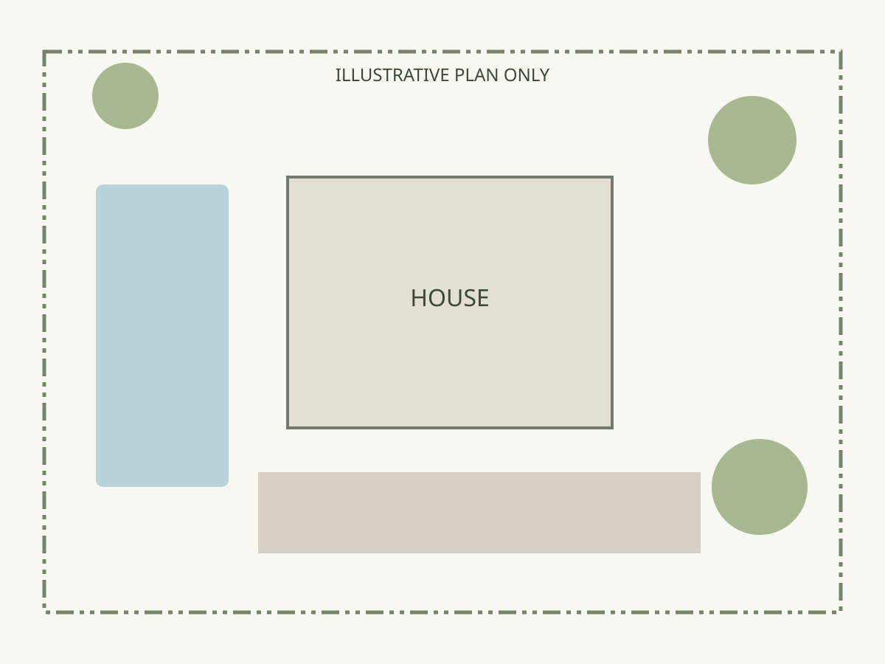

DESIGN / MOODBOARD
A place for every piece.
Try a layout. Shape the tiles. Move things around.
PLANTS, MATERIALS & IDEAS
Blank layout study
STUDIO HTITLE BLOCK
Concept moodboardSample project · Layout study
Drag one tile onto another to change its position.
The existing Studio board, Editorial and Visual wall views stay available in the builder. These are additional arrangements within those views. Design study only. Changes stay in this preview’s memory; no real project is modified. Ratios describe the layout grid, not original image dimensions.